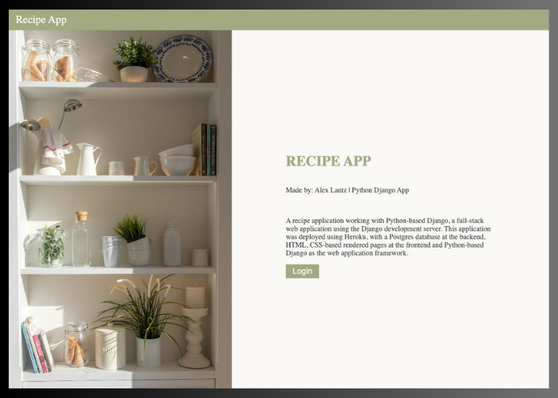
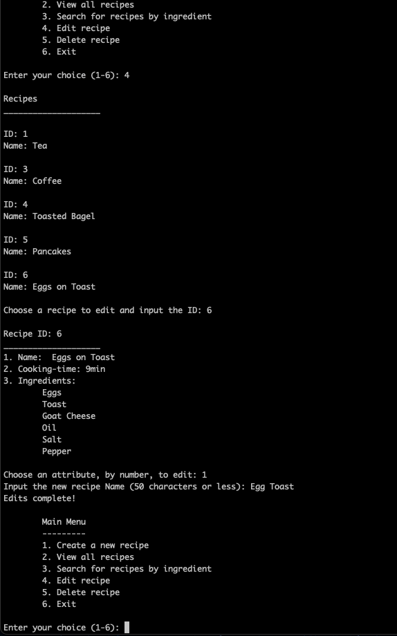
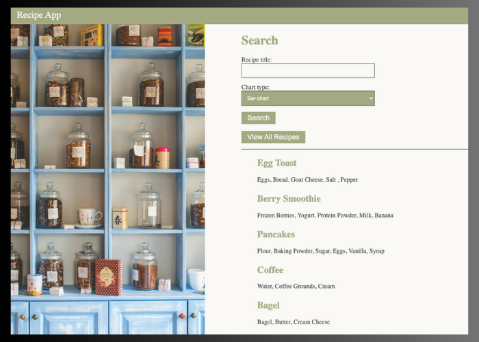

Recipe App
Github link App linkThe Goal:
Build a full-stack web application with Django framework to manage recipes. Providing user friendly interface where users can sig up, log in, create, modify, and search for recipes.
The Purpose:
Career Foundry, Python for Web-Dev, Achievement 2
To develop a full-stack application focusing on Django for the backend and python, html, css for the front end. Challenging me to build a multi-user application applying coding best practices.
The Tools:
- Python
- Django
- SQLite
- HTML/CSS
- Pandas
The Process:
I started this process by building a purely python command line application that allowed you to create, delete, edit, and update recipes. This was how I first learned how to use Python and and exploring the difference in syntax between javascript and python I found python to be very accessible. After creating this it was time to update the application so that it would be a full-stack web app. I used Django to manage the process, taking advantage of its built in sql database, middleware, and query formatting.
Figuring out the “Django way” of doing things was a definite transition. I struggled with visualizing in my head how everything was being connected. Comparing it to React and Angular made it feel much more complicated, and with the other two I was always able to keep a mental image of the file organization, Once I let this go and trusted the process a bit more I grew more comfortable with organizational method of Django.
One of my struggles was to build a search function that returned a Pandas dataFrame, I understood the use of the data frame and how to query the correct recipe data, but I wanted to have a list of all recipes and their ingredients displayed before any search was made. This required me to query all the recipes in its own variable “recipes” and then when a search was made (POST request) I would define another variable with the search query parameters “qs” and display those. In my template I then used a conditional format to call “qs” if available and “recipes” if not. The logic of this programming was clear to me it then took me a while to practice and comfortably intact it with python/django syntax.
The Outcome:
A full-stack Recipe application! I am proud of the aesthetics of the app and functionality. I think what I gained most from the experience was experience using Django and also practicing the skill of using programming principals and applying them to the language and framework I am currently working in. I find the more I shift through different languages and frameworks the more I feel the core programming principals sink in.